Computer Networks course project. Phase 2: Harden, Recover and Troubleshoot. Team dimaginaxal (Section C), domain dimaginaxal.test.
| Member | Enrolment | Machine | Role in Phase 2 | IP address |
|---|---|---|---|---|
| Md. Sajjan | 2401010272 | Mac 1 | Primary DNS (dnsmasq) + test client | 10.7.12.240 |
| Sachin Jaiswal | 2401010399 | Mac 2 | Edge: nginx, TLS, load balancing, failover | 10.7.29.80 |
| Sibtain Ahmed Qureshi | 2401010454 | Mac 3 | Backend A, backup DNS, standby edge | 10.7.27.218 |
| Viraj Chafale | 2401020076 | Mac 4 | Backend B + main test client | 10.7.11.150 |
Phase 2 kept the Phase 1 network and made it survive failures. We added a backup DNS server, gave our records a 30-second TTL, locked the backends behind a firewall so only the edge can reach them, taught nginx to route around a dead backend, and moved the whole site to a standby edge by changing one DNS record.
Every extension A–E was demonstrated live on 22–23 November 2026 and is backed by a screenshot in evidence/phase2/. The two Phase 1 gaps that were about the setup itself are also closed: the backends now send an ETag and answer 304 Not Modified, and HTTP/2 is enabled at the edge.
The clearest single result: when Backend A was stopped, nginx's log recorded upstream=10.7.27.218:3001, 10.7.11.150:3002 upstream_status=502, 200. nginx tried A, failed, retried the same request on B, and the client still got 200. The user never saw the failure.
What is still open is the Extension F practice runs and a few extra screenshots, listed in Section 11.
| Mac | Phase 1 IP | Phase 2 IP | New in Phase 2 | Cloud equivalent |
|---|---|---|---|---|
| Mac 1 | 10.7.2.83 | 10.7.12.240 | TTL 30 s, ttl.dimaginaxal.test test record | Route 53 primary name server |
| Mac 2 | 10.7.1.138 | 10.7.29.80 | Passive health checks, retry, HTTP/2, access log | AWS ALB with health checks |
| Mac 3 | 10.7.12.144 | 10.7.27.218 | Backup DNS, standby edge, pf firewall | Second name server / standby LB / security group |
| Mac 4 | 10.7.16.85 | 10.7.11.150 | pf firewall, main test client | Security group on an app instance |
All four addresses are still inside one /19 (10.7.0.0 – 10.7.31.255), so the Phase 1 topology still holds. Only the configs had to change.
| File | Change | For |
|---|---|---|
config/phase2/dnsmasq-primary.conf | local-ttl=30 (Phase 1 used 0), test record ttl.dimaginaxal.test, log-queries | Ext. B |
config/phase2/dnsmasq-backup.conf | New. Same records, listening on Mac 3 | Ext. A |
config/phase2/nginx.conf | max_fails=1 fail_timeout=10s, proxy_next_upstream, 2 s connect timeout, X-Edge header, upstream access log, http2 on | Ext. D, E |
config/phase2/nginx-standby.conf | New. Identical except X-Edge: mac3-standby | Ext. E |
config/phase2/pf-backend-a.conf, -b.conf | New. Only 10.7.29.80 may open TCP to 3001 / 3002 | Ext. C |
backend-a/, backend-b/server.js | ETag + If-None-Match → 304; new /api/info with the same body on A and B | Phase 1 Task F gap |
scripts/diagnose.sh | New. Checks DNS → IP → TCP → TLS → HTTP → backends and names the first broken layer | Ext. F |
Each backend now hashes its response body into an ETag. If the client sends that value back in If-None-Match, the backend answers 304 with no body. /api/info returns the same body on A and B, so the ETag matches whichever backend nginx picks.
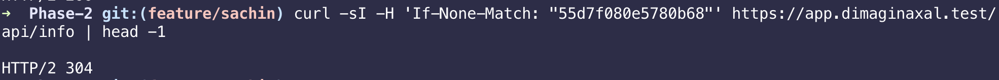
HTTP/2 304. Also note HTTP/2: the edge now speaks HTTP/2 to clients.| Case | What happens | Network cost |
|---|---|---|
| Fresh cache hit | Copy younger than max-age=60 is reused | No request at all |
| Conditional request | Client asks "still ETag X?" → 304 | Headers only, no body |
| Full request | No copy, or the content changed → 200 | Headers and full body |
dnsmasq now runs on two Macs with identical records: Mac 1 (primary) and Mac 3 (backup). Clients list both:
sudo networksetup -setdnsservers Wi-Fi 10.7.12.240 10.7.27.218Before the test, dig @10.7.12.240 and dig @10.7.27.218 both returned 10.7.29.80. Then Sajjan stopped dnsmasq on Mac 1.
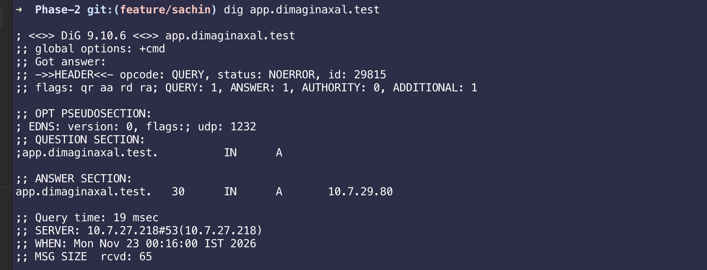
10.7.29.80, SERVER 10.7.27.218, 19 ms.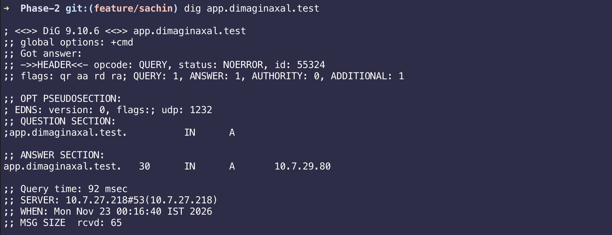
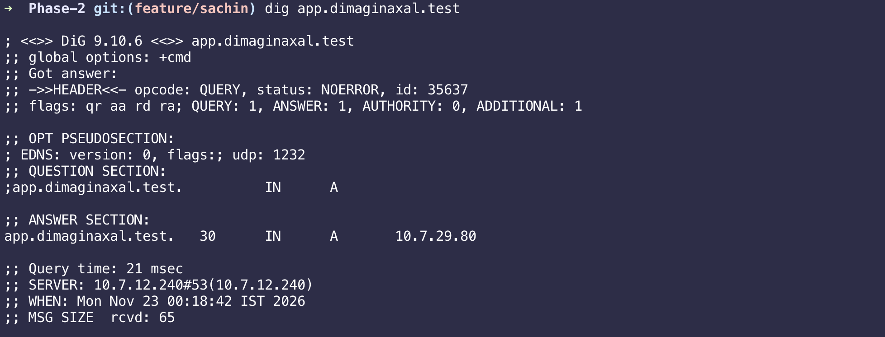
The answer section is identical in all three, including the new TTL of 30. The client cannot tell which server answered, which is the point of redundancy. The flag aa (authoritative answer) shows both servers answer from their own records, not by forwarding.
| What broke | dig | curl | Meaning |
|---|---|---|---|
| Both DNS servers | times out | (6) Could not resolve host | Client cannot even find the edge |
| Both backends | answers 10.7.29.80 | 502 Bad Gateway (Figure 15) | Name, TCP and TLS fine. Nothing behind the edge |
We met the first case for real: Mac 4 had no DNS server set and failed with exactly curl: (6) Could not resolve host (Section 10).
Both DNS servers now send local-ttl=30. To avoid disturbing the real site we used a separate name, ttl.dimaginaxal.test, and watched it through the macOS resolver cache, the same lookup path that browsers and curl use:
while true; do printf "%s " "$(date +%T)"
dscacheutil -q host -a name ttl.dimaginaxal.test | awk '/ip_address/{print $2}'; sleep 3; doneThe record was changed on both servers from 10.7.29.80 to 10.7.11.150, then later changed back.
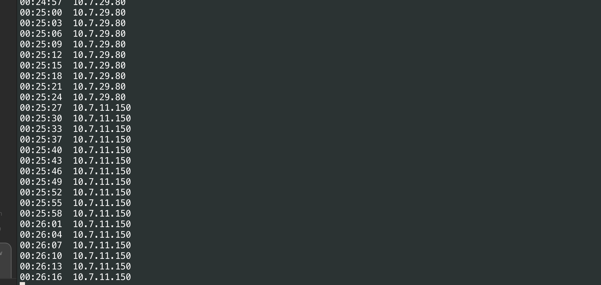
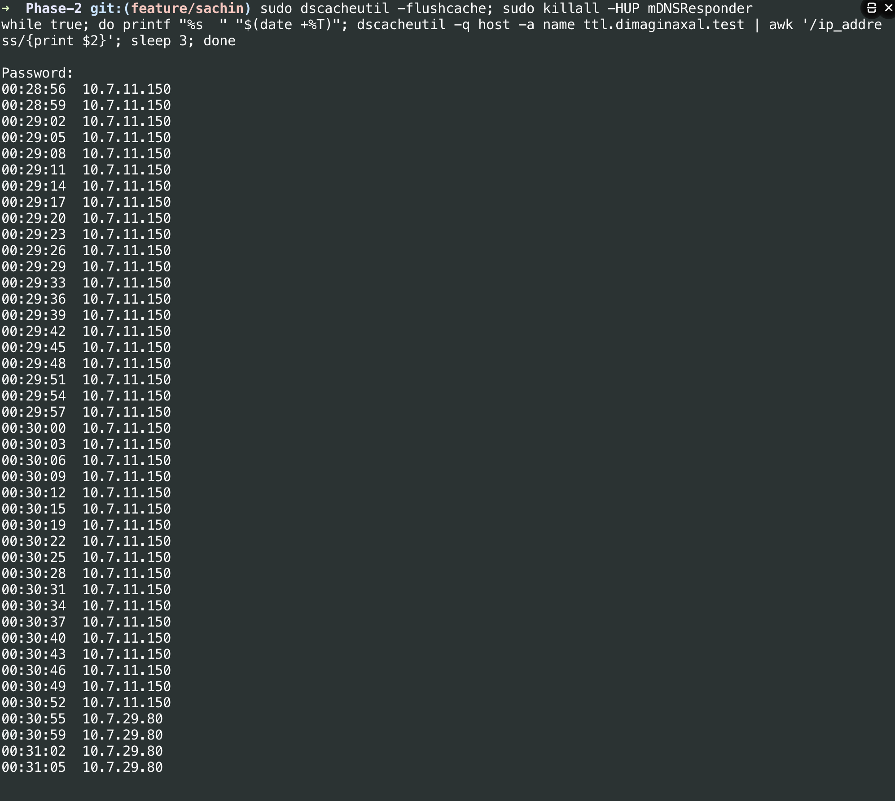
10.7.11.150 until 00:30:52, back to 10.7.29.80 at 00:30:55.dig asks the server directly and skips the OS cache, so it showed the new value at once. Applications kept the cached answer for up to one TTL. Flushing with sudo dscacheutil -flushcache; sudo killall -HUP mDNSResponder makes the next lookup fetch the new value immediately.
In production a team lowers the TTL (for example from 3600 to 60) a day before a migration, so every cache expires quickly at cut-over time, and raises it again afterwards.
On Mac 3 and Mac 4 we first saved a rollback copy (pfctl -s info, pfctl -sr, /etc/pf.conf), then loaded three rules:
edge = "10.7.29.80"
pass in quick on lo0 all
pass in quick proto tcp from $edge to any port 3001 # 3002 on Mac 4
block drop in quick proto tcp from any to any port 3001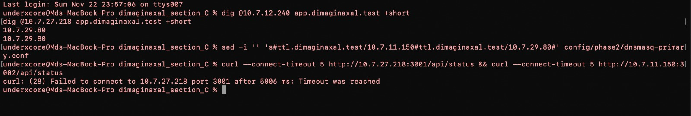
curl http://10.7.27.218:3001 fails: Timeout was reached after 5006 ms.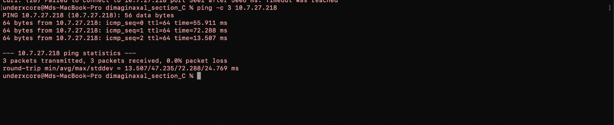
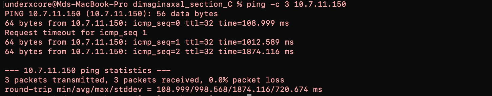
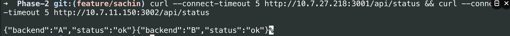
sudo pfctl -f /etc/pf.conf), Mac 1 reaches port 3001 again.The blocked client sees a timeout, not "connection refused", because block drop throws the SYN away silently. block return would send a TCP RST, and curl would report "refused" at once. Ping still works because ICMP is a different protocol. The firewall filters by protocol and port, not by host.
The Phase 2 nginx config adds passive health checks and a retry:
upstream backend_pool {
server 10.7.27.218:3001 max_fails=1 fail_timeout=10s;
server 10.7.11.150:3002 max_fails=1 fail_timeout=10s;
}
location / {
proxy_pass http://backend_pool;
proxy_connect_timeout 2s;
proxy_next_upstream error timeout http_502 http_503 http_504;
proxy_next_upstream_tries 2;
}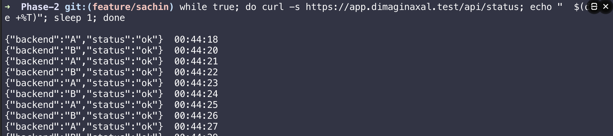
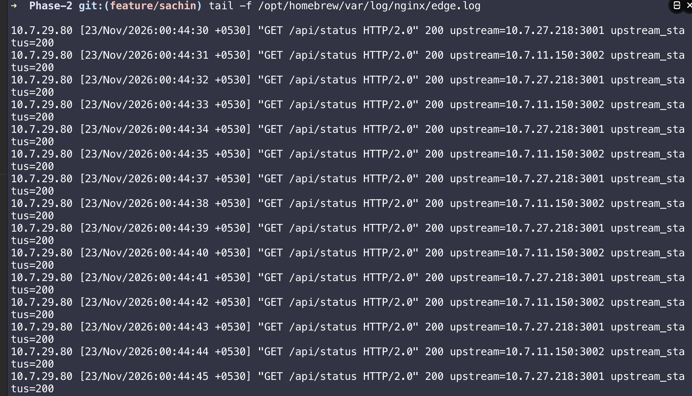
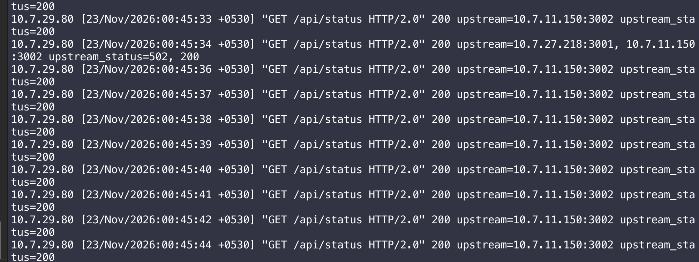
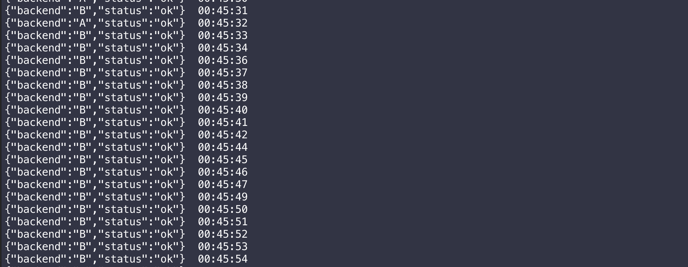
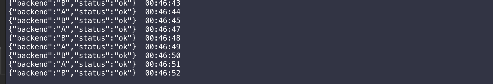
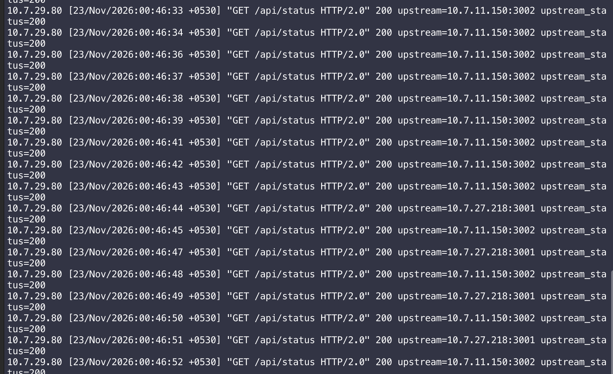
10.7.27.218:3001 is back in the rotation once fail_timeout (10 s) passed.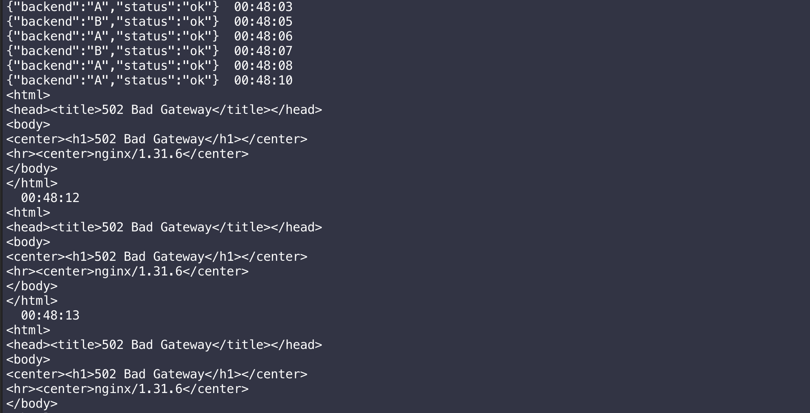
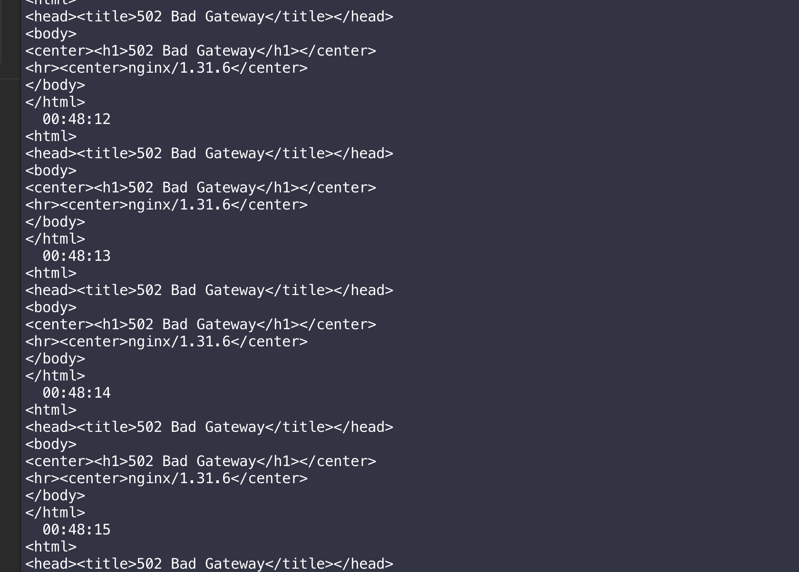
The edge itself. If Mac 2 dies, DNS still hands out 10.7.29.80 and every client fails, even with both backends healthy. Ways to remove it:
Mac 3 ran a standby nginx with the same certificate and key as Mac 2 and an identical config, except for X-Edge: mac3-standby. Before touching DNS we tested it directly by pinning the name to Mac 3 for one request:
$ curl -sI --resolve app.dimaginaxal.test:443:10.7.27.218 https://app.dimaginaxal.test/api/status
HTTP/2 200
x-backend: A
x-edge: mac3-standbyThe certificate validated on the standby with no warning, because a certificate is bound to the name, not to an IP address.
Mac 4 then ran a watcher printing the x-edge header every 2 s, so its cache held the old answer. Sajjan and Sibtain changed app and api to 10.7.27.218 on both DNS servers.
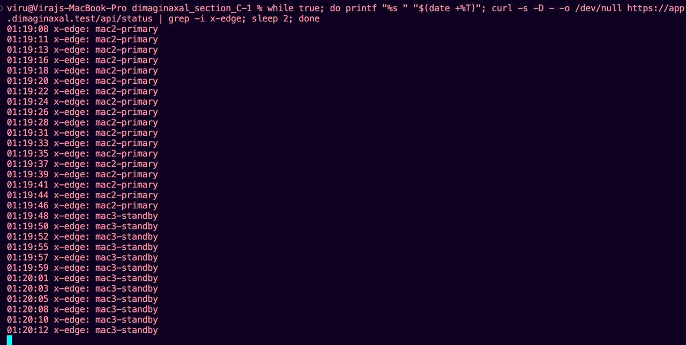
Mac 2's nginx stayed running throughout, so clients still holding the old answer were served normally while their caches drained. Nobody saw an outage. A new client that flushed its cache reached the standby at once. Afterwards the records were reverted, the standby was stopped, and the copied private key was deleted from Mac 3.
For the faculty-injected fault we check one layer at a time and stop at the first failure. scripts/diagnose.sh runs the same sequence and names the layer:
| Layer | Check | Healthy | Typical faults |
|---|---|---|---|
| DNS | dig app.dimaginaxal.test | 10.7.29.80 from .12.240 or .27.218 | dnsmasq stopped, wrong record, client DNS changed |
| IP | ping 10.7.29.80 | replies | wrong IP in record, host off the LAN |
| TCP | nc -vz app.dimaginaxal.test 443 | succeeded | nginx stopped, wrong listen port, firewall |
| TLS | curl -v https://… | TLSv1.3, verify ok | CA not trusted, wrong cert / server_name |
| HTTP | curl -sI https://…/api/status | 200, X-Backend | 502: upstream wrong / backends down |
| Backend | from Mac 2: curl http://10.7.27.218:3001/… | JSON | process stopped, bound to 127.0.0.1, pf |
Practice runs, where one member injects a fault and another diagnoses it out loud, are still to be recorded (Section 11). The real faults we diagnosed while building Phase 2 are in Section 10.
None of these were planned. Each looked at first like "it doesn't work", and each turned out to sit at one specific layer.
| Problem | Symptom | Layer | Cause and fix |
|---|---|---|---|
| DHCP gave new IPs | Phase 1 configs pointed at dead addresses | IP | Leases changed since October. All Phase 2 configs updated. Infrastructure should have reserved addresses. |
| Client DNS set before resolvers ran | dig timed out; git push: Could not resolve host: github.com | DNS | Mac 2 depended on DNS servers that were not up yet. Reset to the default, re-applied once both answered. |
| No DNS servers on Mac 4 | curl: (6) Could not resolve host, though the CA was trusted | DNS (client) | networksetup -setdnsservers Wi-Fi 10.7.12.240 10.7.27.218 |
| VPN resolver on Mac 2 | .test names returned NXDOMAIN via 100.100.100.100 | DNS | Tailscale's DNS overrides ours. Turn it off for demos. |
| dnsmasq missing on Mac 3 | sudo: dnsmasq: command not found | Setup | brew install dnsmasq, run with its full path under sudo. |
| Standby nginx "failed" | bind() to 0.0.0.0:443 failed (48: Address already in use) | Transport | lsof showed nginx was already listening from the first start. Use nginx -s reload. |
| Typo in test URL | {"error":"Not Found"} six times | Application | Path became /api/status;. DNS, TCP, TLS and the proxy were all fine; only the path was wrong. |
| Watcher printed only timestamps | No x-edge line on Mac 4 | DNS | curl -s hid the error. Re-running without -s showed error 6. Always remove silent flags when diagnosing. |
| Unstable Wi-Fi | Ping RTT up to 1874 ms (Mac 4), ~500 ms (Mac 1) | Link | Laptop power saving on shared Wi-Fi. Keep machines plugged in for the demo. |
| Item | Status | Evidence | Still to add |
|---|---|---|---|
| 304 / ETag (Phase 1 gap) | Done | Figure 1 | Browser "(memory cache)" screenshot |
| A. Backup DNS | Done | Figures 2–4 | "Before" dig showing SERVER 10.7.12.240 |
| B. TTL and record change | Done | Figures 5–6 | Manual cache flush switching instantly |
| C. Service isolation | Done | Figures 7–11 | pfctl -sr output; Mac 1 → :3002 timeout |
| D. HA failover | Done | Figures 12–18 | |
| E. Edge cutover | Done | Figure 19 | New client reaching the standby at once |
| F. Troubleshooting | Method ready | Section 9, 10 | At least three recorded practice faults |
| Phase 1 leftovers | Open | Mac 3 → Mac 4 ping; full curl -v; client → :443 Wireshark capture |
dig saw new records instantly while applications waited up to 30 s. A cutover is never faster than the TTL that was in place before it.502, 200, shows a failure that no user ever saw. But the balancer itself is now the single point of failure.-s that hid them.listen-addressport=53
listen-address=127.0.0.1,10.7.12.240
bind-interfaces
local-ttl=30
address=/app.dimaginaxal.test/10.7.29.80
address=/api.dimaginaxal.test/10.7.29.80
address=/ttl.dimaginaxal.test/10.7.29.80
no-resolv
server=1.1.1.1
server=8.8.8.8
cache-size=1000
log-queriesedge = "10.7.29.80"
pass in quick on lo0 all
pass in quick proto tcp from $edge to any port 3001
block drop in quick proto tcp from any to any port 3001
# load: sudo pfctl -f config/phase2/pf-backend-a.conf && sudo pfctl -e
# rollback: sudo pfctl -f /etc/pf.conf (and pfctl -d if pf was disabled before)function sendJson(req, res, status, obj) {
const body = JSON.stringify(obj);
const etag = '"' + crypto.createHash("sha1").update(body).digest("hex").slice(0, 16) + '"';
res.setHeader("ETag", etag);
if (status === 200 && req.headers["if-none-match"] === etag) {
res.writeHead(304); // client's copy is current: headers only
res.end();
return;
}
res.writeHead(status);
res.end(body);
}Full source: backend-a/server.js, backend-b/server.js (identical except the port and letter).
worker_processes 1;
events { worker_connections 1024; }
http {
include mime.types;
default_type application/octet-stream;
sendfile on;
keepalive_timeout 65;
log_format edge '$remote_addr [$time_local] "$request" $status '
'upstream=$upstream_addr upstream_status=$upstream_status';
access_log /opt/homebrew/var/log/nginx/edge.log edge;
upstream backend_pool {
server 10.7.27.218:3001 max_fails=1 fail_timeout=10s;
server 10.7.11.150:3002 max_fails=1 fail_timeout=10s;
}
server {
listen 80;
server_name app.dimaginaxal.test;
return 301 https://$host$request_uri;
}
server {
listen 443 ssl;
http2 on;
server_name app.dimaginaxal.test;
ssl_certificate /opt/homebrew/etc/nginx/certs/app.dimaginaxal.test.pem;
ssl_certificate_key /opt/homebrew/etc/nginx/certs/app.dimaginaxal.test-key.pem;
ssl_protocols TLSv1.2 TLSv1.3;
add_header X-Edge "mac2-primary" always; # "mac3-standby" on Mac 3
location / {
proxy_pass http://backend_pool;
proxy_connect_timeout 2s;
proxy_read_timeout 5s;
proxy_next_upstream error timeout http_502 http_503 http_504;
proxy_next_upstream_tries 2;
proxy_set_header Host $host;
proxy_set_header X-Real-IP $remote_addr;
proxy_set_header X-Forwarded-For $proxy_add_x_forwarded_for;
proxy_set_header X-Forwarded-Proto $scheme;
}
}
}| Purpose | Command |
|---|---|
| Load-balancing / failover watcher | while true; do curl -s https://app.dimaginaxal.test/api/status; echo " $(date +%T)"; sleep 1; done |
| Which edge answered | curl -s -D - -o /dev/null https://app.dimaginaxal.test/api/status | grep -i x-edge |
| Flush macOS DNS cache | sudo dscacheutil -flushcache; sudo killall -HUP mDNSResponder |
| Test standby without DNS | curl -sI --resolve app.dimaginaxal.test:443:10.7.27.218 https://app.dimaginaxal.test/api/status |
| Layer-by-layer diagnosis | ./scripts/diagnose.sh |